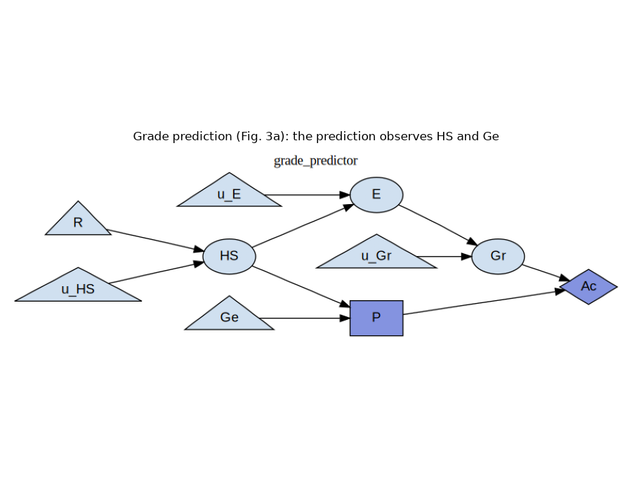
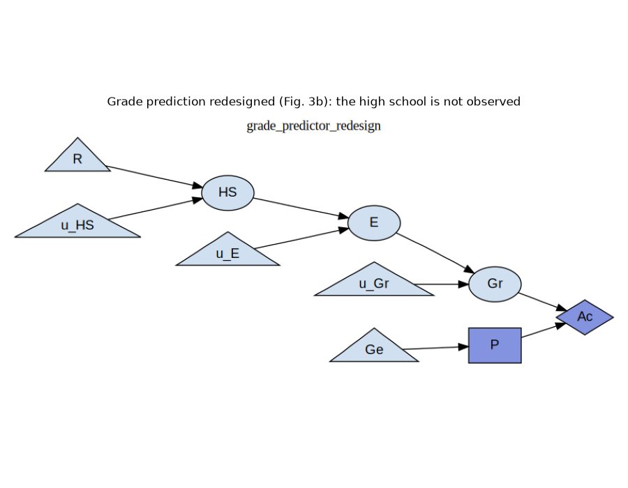
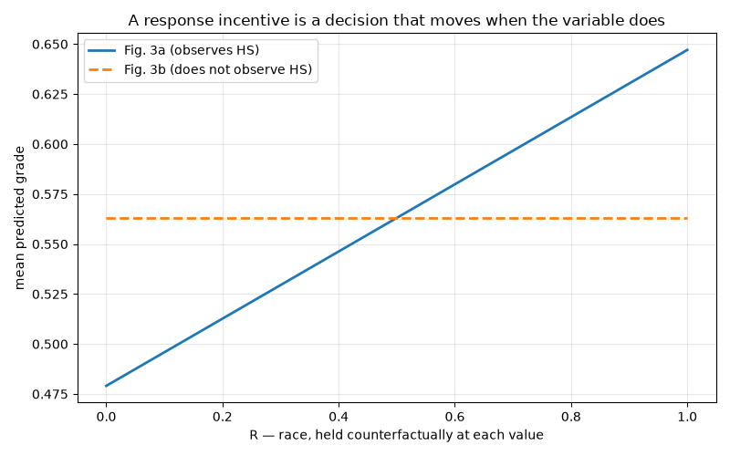
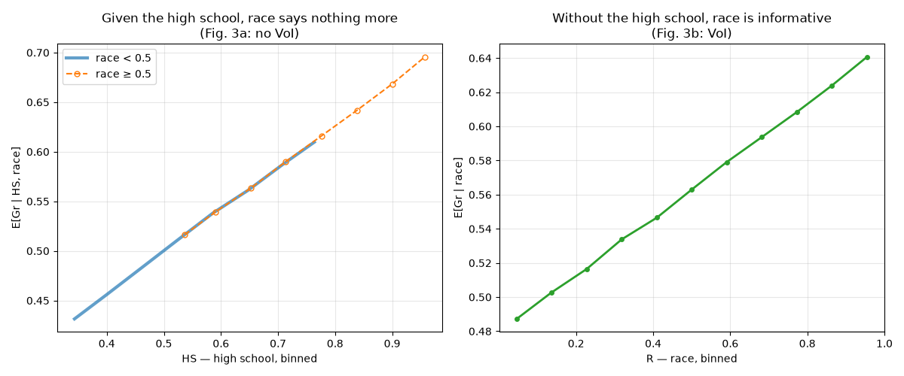
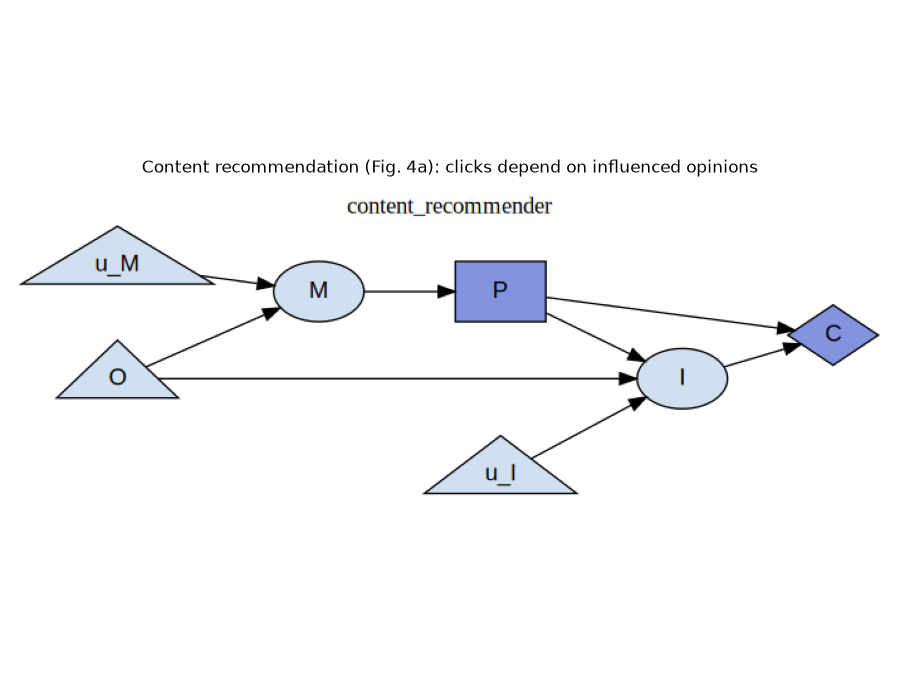
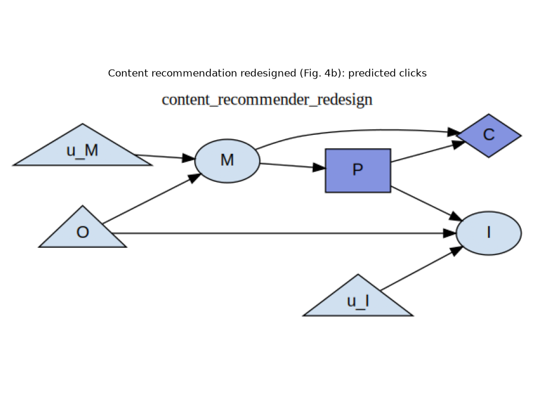
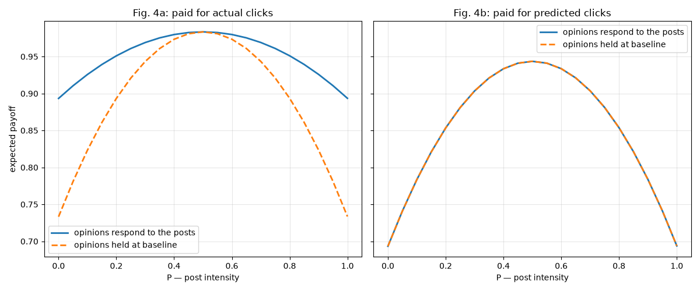

Note
Go to the end to download the full example code.
Incentives: Reading Fairness and Manipulation Off a Diagram¶
An agent optimising an objective acquires incentives it was never given deliberately: to observe some things, to respond to others, to move others still. Which incentives it acquires is decided by the shape of the problem – what the agent observes, what it can influence, what it is paid for – and can therefore be read off an influence diagram, before any payoff numbers are chosen and without solving anything.
Everitt, Carey, Langlois, Ortega & Legg [1] make that precise for a diagram with a single decision, with four criteria, each of which has a graphical test that is both sound and complete:
Value of information (VoI): would observing \(X\) raise the achievable payoff?
Response incentive (RI): does every optimal policy respond to a change in \(X\)?
Value of control (VoC): would being able to set \(X\) raise the achievable payoff?
Instrumental control incentive (ICI): does the agent reach its payoff through \(X\)?
The four come apart, and where they come apart is where the safety content is. A system that responds to a sensitive attribute is unfair even if observing that attribute would buy it nothing; a system that is paid for moving something in the world has an incentive to move it, whether or not moving it was the point.
This example takes the paper’s two running examples, encoded as scikit-agent
blocks in skagent.models.safety.incentives, and
computes all four criteria for every node of each diagram, reproducing the paper’s readings, and
confirms three of those readings numerically against the mechanisms, which the criteria themselves never look at.
Each example comes as a pair: a diagram that admits an incentive, and a redesign that does not. One edge separates the members of a pair, and that edge flips one criterion while leaving another fixed.
References¶
import copy
import matplotlib.pyplot as plt
import numpy as np
from skagent.model_analyzer import ModelAnalyzer
from skagent.models.safety.incentives import (
content_recommender_block,
content_recommender_redesign_block,
grade_predictor_block,
grade_predictor_redesign_block,
)
from skagent.relevance import (
admits_ici,
admits_ri,
admits_voc,
admits_voi,
minimal_reduction,
)
CRITERIA = {"VoI": admits_voi, "RI": admits_ri, "VoC": admits_voc, "ICI": admits_ici}
def incentive_table(block, decision="P"):
"""Print every criterion for every node of a block's diagram.
``n/a`` marks a query the criterion refuses as outside its domain rather
than answers: value of information asks about observing a variable, which is
not defined for the decision itself or anything downstream of it.
"""
scim = ModelAnalyzer(block, {}).analyze().influence_graph()
nodes = sorted(n for n in scim.graph.nodes if not n.startswith("u_"))
print(f"{'node':>5} " + " ".join(f"{name:>4}" for name in CRITERIA))
for node in nodes:
cells = []
for criterion in CRITERIA.values():
try:
cells.append("yes" if criterion(scim, decision, node) else "-")
except ValueError:
cells.append("n/a")
print(f"{node:>5} " + " ".join(f"{cell:>4}" for cell in cells))
return scim
def sample(block, n=200_000, seed=0):
"""A private copy of *block* with its shocks constructed, and one draw."""
block = copy.deepcopy(block)
block.construct_shocks({}, rng=np.random.default_rng(seed))
return block, {sym: dist.draw(n) for sym, dist in block.get_shocks().items()}
def binned_mean(x, y, edges):
"""``(E[x | bin], E[y | bin])`` for each bin.
Each point sits at the bin's mean ``x`` rather than at its midpoint, so that
two groups whose ``x`` is distributed differently *within* a bin are still
compared at the same ``x``. Plotting against midpoints instead makes a group
with more mass at the top of its bins look as though it had a higher ``y``
for the same ``x``.
"""
index = np.digitize(x, edges) - 1
occupied = [b for b in range(len(edges) - 1) if (index == b).any()]
return (
np.array([x[index == b].mean() for b in occupied]),
np.array([y[index == b].mean() for b in occupied]),
)
Grade Prediction¶
A university predicts an applicant’s grade (P) and is paid for accuracy
(Ac): the closer the prediction to the grade the applicant goes on to earn
(Gr), the better. Race (R) affects which high school the applicant
attends (HS); the high school affects their education (E); education
affects the grade. Gender (Ge) is observed by the predictor and affects
nothing else.
In Fig. 3a of the paper the prediction observes the high school and gender.
scim_3a = incentive_table(grade_predictor_block)
node VoI RI VoC ICI
Ac n/a - yes yes
E yes - yes -
Ge - - - -
Gr yes - yes -
HS yes yes yes -
P n/a n/a n/a yes
R - yes yes -
Read the R row: race admits a response incentive but no value of
information. Both halves matter, and they say different things.
No VoI (Thm. 9): the university would pay nothing for the applicant’s race. Race matters to the grade only through the high school, and the high school is already observed – it screens off race. A university that collects race data gains no accuracy by it.
A response incentive (Thm. 12): nonetheless, every optimal prediction rule responds to race. Change an applicant’s race, and their high school changes, and so the prediction changes. The university does not use race and cannot help but respond to it.
That gap is the paper’s fairness result. By its Thm. 14, a response incentive on a sensitive attribute means every optimal policy is counterfactually unfair in the sense of Kusner et al. [2]. Not “may be”: every one of them. So “we don’t collect race” – a true statement about value of information – is no answer to the fairness question, which is about the response incentive.
Gender is the other instructive row: it is observed and admits nothing at all. Its information link is nonrequisite, and the minimal reduction drops it.
information links dropped by the minimal reduction: {('Ge', 'P')}
The three criteria that run over the reduction see a diagram in which the prediction never looked at gender, which is why gender admits no response incentive despite being observed. Observing a variable and responding to it are different things.
img, _ = grade_predictor_block.display({})
plt.figure(figsize=(9, 7))
plt.imshow(img)
plt.axis("off")
plt.title("Grade prediction (Fig. 3a): the prediction observes HS and Ge")
plt.tight_layout()

<IPython.core.display.SVG object>
The Redesign¶
Fig. 3b deletes one edge: the prediction no longer observes the high school.
scim_3b = incentive_table(grade_predictor_redesign_block)
node VoI RI VoC ICI
Ac n/a - yes yes
E yes - yes -
Ge - - - -
Gr yes - yes -
HS yes - yes -
P n/a n/a n/a yes
R yes - yes -
The R row has inverted. Race now admits value of information and no
response incentive – the exact opposite of Fig. 3a, across a one-edge
change.
No RI: with nothing informative observed, the optimal prediction is the same number for every applicant. Nothing about an applicant can change it, race included, so by Thm. 14 the redesign is counterfactually fair.
VoI: and now race would be worth observing. With the high school no longer in the picture, race is the only thing left that carries information about the grade.
The redesign buys fairness with accuracy, and the criteria say exactly where the payment is made. This is the point of a pair: neither diagram alone distinguishes the two criteria, and a criterion that had accidentally computed plain reachability from race would report the same thing on both.
img, _ = grade_predictor_redesign_block.display({})
plt.figure(figsize=(9, 7))
plt.imshow(img)
plt.axis("off")
plt.title("Grade prediction redesigned (Fig. 3b): the high school is not observed")
plt.tight_layout()

<IPython.core.display.SVG object>
Checking the Response Incentive Numerically¶
The criteria never looked at a mechanism. Do they say something true about these ones?
An optimal prediction minimises expected squared error, so it is the conditional mean of the grade given what is observed. The block’s mechanisms are linear, so both are one line of algebra: \(E[Gr \mid HS] = 0.42\,HS + 0.29\) for Fig. 3a, and, since gender carries nothing, the constant \(E[Gr] = 0.563\) for Fig. 3b.
A response incentive says a counterfactual change in race moves the decision. So: hold every noise term fixed, vary race alone, and watch the prediction.
block_3a, shocks = sample(grade_predictor_block)
block_3b, _ = sample(grade_predictor_redesign_block)
n = len(shocks["R"])
race_grid = np.linspace(0.0, 1.0, 11)
predictions_3a, predictions_3b = [], []
for race in race_grid:
counterfactual = {**shocks, "R": np.full(n, race)}
predictions_3a.append(
np.mean(
block_3a.transition(counterfactual, {"P": lambda HS, Ge: 0.42 * HS + 0.29})[
"P"
]
)
)
predictions_3b.append(
np.mean(block_3b.transition(counterfactual, {"P": lambda Ge: 0.563})["P"])
)
plt.figure(figsize=(8, 5))
plt.plot(race_grid, predictions_3a, linewidth=2, label="Fig. 3a (observes HS)")
plt.plot(
race_grid,
predictions_3b,
linewidth=2,
linestyle="--",
label="Fig. 3b (does not observe HS)",
)
plt.xlabel("R — race, held counterfactually at each value")
plt.ylabel("mean predicted grade")
plt.title("A response incentive is a decision that moves when the variable does")
plt.legend()
plt.grid(True, alpha=0.3)
plt.tight_layout()

The Fig. 3a prediction tracks race; the Fig. 3b prediction is a flat line. That is the response incentive and its absence, in the mechanisms rather than in the graph.
Checking the Value of Information Numerically¶
The other half of the R row was the claim that in Fig. 3a race is worth
nothing once the high school is known. The best a predictor can do given what
it observes is the conditional mean of the grade, so the claim is that
\(E[Gr \mid HS, R]\) does not depend on \(R\) – estimable directly.
vals = block_3a.transition(shocks, {"P": lambda HS, Ge: 0.42 * HS + 0.29})
high_school, grade, race = vals["HS"], vals["Gr"], shocks["R"]
lower, upper = race < 0.5, race >= 0.5
hs_edges = np.linspace(high_school.min(), high_school.max(), 12)
r_edges = np.linspace(0.0, 1.0, 12)
fig, (left, right) = plt.subplots(1, 2, figsize=(12, 5))
# The two groups overlap only over part of the high-school range, and where they
# do the curves land on each other, so the second is drawn dashed on top of the
# first rather than hiding it.
styles = [
dict(linewidth=3, alpha=0.7),
dict(linewidth=1.5, linestyle="--", marker="o", markersize=5, fillstyle="none"),
]
for (mask, label), style in zip([(lower, "race < 0.5"), (upper, "race ≥ 0.5")], styles):
centres, means = binned_mean(high_school[mask], grade[mask], hs_edges)
left.plot(centres, means, label=label, **style)
left.set_xlabel("HS — high school, binned")
left.set_ylabel("E[Gr | HS, race]")
left.set_title("Given the high school, race says nothing more\n(Fig. 3a: no VoI)")
left.legend()
left.grid(True, alpha=0.3)
centres, means = binned_mean(race, grade, r_edges)
right.plot(centres, means, linewidth=2, marker="o", markersize=4, color="C2")
right.set_xlabel("R — race, binned")
right.set_ylabel("E[Gr | race]")
right.set_title("Without the high school, race is informative\n(Fig. 3b: VoI)")
right.grid(True, alpha=0.3)
plt.tight_layout()

Two curves lying on top of each other on the left: conditional on the high school, the grade does not depend on race, so observing race would add nothing to a predictor that already sees the high school. The upward slope on the right is the same information, made valuable by taking the high school away.
Content Recommendation¶
A recommender chooses posts (P) from a model (M) of a user’s original
opinions (O). The posts influence the user’s opinions (I). Clicks
(C) are the payoff, and depend on the posts and on the user’s opinions as
the posts have left them.
scim_4a = incentive_table(content_recommender_block)
node VoI RI VoC ICI
C n/a - yes yes
I n/a - yes yes
M yes yes yes -
O yes yes yes -
P n/a n/a n/a yes
Two rows carry the argument.
I, the influenced opinions, admits an instrumental control incentive
(Thm. 18): there is a directed path from the decision through I to the
payoff. The recommender is paid for what the posts do to the user’s opinions.
Nobody wrote that objective; it is implied by paying for clicks in a world
where posts change minds. This is the manipulation incentive.
O, the user’s original opinions, admits positive value of control
(Thm. 16) but no ICI (Thm. 18). The recommender would gain from setting
what the user thought before it arrived – and has no way to reach it. The two
control criteria separate exactly here: value of control asks whether a
variable is worth moving, an instrumental control incentive asks whether the
agent’s own decision moves it.
img, _ = content_recommender_block.display({})
plt.figure(figsize=(9, 7))
plt.imshow(img)
plt.axis("off")
plt.title("Content recommendation (Fig. 4a): clicks depend on influenced opinions")
plt.tight_layout()

<IPython.core.display.SVG object>
The Redesign¶
Fig. 4b retargets the payoff: the recommender is paid for clicks predicted from its model of the user’s original opinions, rather than for the clicks the influenced user actually produces.
scim_4b = incentive_table(content_recommender_redesign_block)
node VoI RI VoC ICI
C n/a - yes yes
I n/a - - -
M yes yes yes -
O - yes yes -
P n/a n/a n/a yes
I now admits nothing. Nothing directed leaves it, so no path from the
decision reaches the payoff through it: the incentive to move the user’s
opinions is gone, and with it the value of controlling them.
The recommender still chooses posts, still influences opinions, and is still paid for a click-shaped quantity. What changed is which quantity, and that alone removed the incentive.
img, _ = content_recommender_redesign_block.display({})
plt.figure(figsize=(9, 7))
plt.imshow(img)
plt.axis("off")
plt.title("Content recommendation redesigned (Fig. 4b): predicted clicks")
plt.tight_layout()

<IPython.core.display.SVG object>
Checking the Control Incentive Numerically¶
An instrumental control incentive says payoff flows through the variable. So cut the flow and see what is lost: hold the influenced opinions at the value they would have taken under a baseline recommendation, let the recommender vary its posts anyway, and compare with the payoff it gets when opinions are free to respond.
posts = np.linspace(0.0, 1.0, 21)
baseline_post = 0.5
fig, axes = plt.subplots(1, 2, figsize=(12, 5), sharey=True)
panels = [
(content_recommender_block, "Fig. 4a: paid for actual clicks", axes[0]),
(content_recommender_redesign_block, "Fig. 4b: paid for predicted clicks", axes[1]),
]
for block, title, axis in panels:
block, shocks = sample(block, n=50_000)
frozen_opinions = block.transition(shocks, {"P": lambda M: baseline_post})["I"]
responsive, frozen = [], []
for post in posts:
responsive.append(block.transition(shocks, {"P": lambda M: post})["C"].mean())
frozen.append(
block.transition(
{**shocks, "I": frozen_opinions}, {"P": lambda M: post}, fix=["I"]
)["C"].mean()
)
axis.plot(posts, responsive, linewidth=2, label="opinions respond to the posts")
axis.plot(
posts, frozen, linewidth=2, linestyle="--", label="opinions held at baseline"
)
axis.set_xlabel("P — post intensity")
axis.set_title(title)
axis.grid(True, alpha=0.3)
axis.legend()
axes[0].set_ylabel("expected payoff")
plt.tight_layout()
plt.show()

On the left the two curves come apart everywhere except at the baseline post
itself, where freezing the opinions changes nothing by construction. Away from
it, a recommender paid for actual clicks earns more, because the opinions moved
toward whatever it posted. That gap is the payoff flowing through the user’s
mind, and it is what the ICI on I names. On the right the curves coincide
at every post – the redesigned payoff never reads the influenced opinions, so
freezing them costs nothing, which is the ICI’s absence made numerical.
What the Criteria Cost¶
Every table above was computed from the graph: no payoff values, no distributions, no solving. The numeric checks came afterwards, and confirmed what the graph had already said. That order is the point – the criteria screen a design before it is built, and a criterion that answers “no” rules the behaviour out for every way of filling in the numbers.
The direction of error is worth knowing. Soundness and completeness are properties of the diagram, and d-separation is conservative on the deterministic mechanisms these blocks are written with, so an incentive may be reported where the functional effect happens to vanish – never the reverse. A criterion here may cry wolf; it will not miss one.
Total running time of the script: (0 minutes 1.275 seconds)